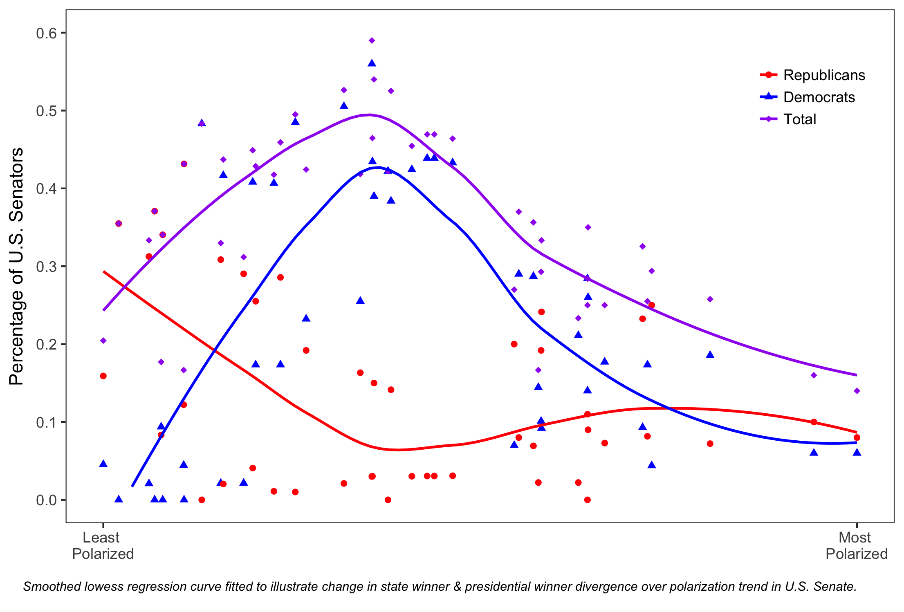

Working Papers

Abstract: Using originally collected data of the entire direct-election era, this paper asks two questions: (1) How has the incumbency advantage changed in Senate elections as the Senate becomes more ideologically polarized? And, (2) Are Senate elections becoming more partisan-centered at the expense of the incumbency advantage? This paper finds evidence that increased polarization increases the salience of partisanship and, with the exception of Senators from politically hostile states, decreases the saliency of incumbency in Senate election outcomes. These findings are confirmed using voter-level data.

Abstract: Do procedural votes impact the re-election prospects of Senators? If so, how do members make the strategic decision to break with their party? We find that not only do certain defectors see an electoral boost, some members moderate how they vote on procedural items as their election nears. Our paper provides a new individual member measure of obstruction along with a detailed narrative explaining when members decide to support gridlock and the impact those decisions have on their reelection.
Abstract: Using the case of U.S. sanctions against Iran, this paper explores the role of constituent-level and elite level variables in determining an individual congressperson’s acquiescence to the “pro-Israel” position. These findings have implications for causes of the continued strength of the US-Israel relationship as well as implications for the determinants of congressional foreign policy positions more broadly.
Copyright © 2017 by Carlos Algara. Made with RStudio.